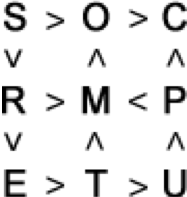

Replace each letter in the diagram with a digit from 1 to 9 so that all the inequalities are satisfied,  and then arrange the letters in numerical order of their numerical values. What word did you get?
Think about what number corresponds to the letter, from which only the signs "$<$" leave.
We find a letter from which only the signs "$<$" leave. This is the letter "K". It corresponds to the minimum digit. We cross it out and all the signs that come out of it. Again we find that letter, from which only the signs "$<$" leave. And so on. As a result, we read the word "COMPUTERS".
COMPUTERS.